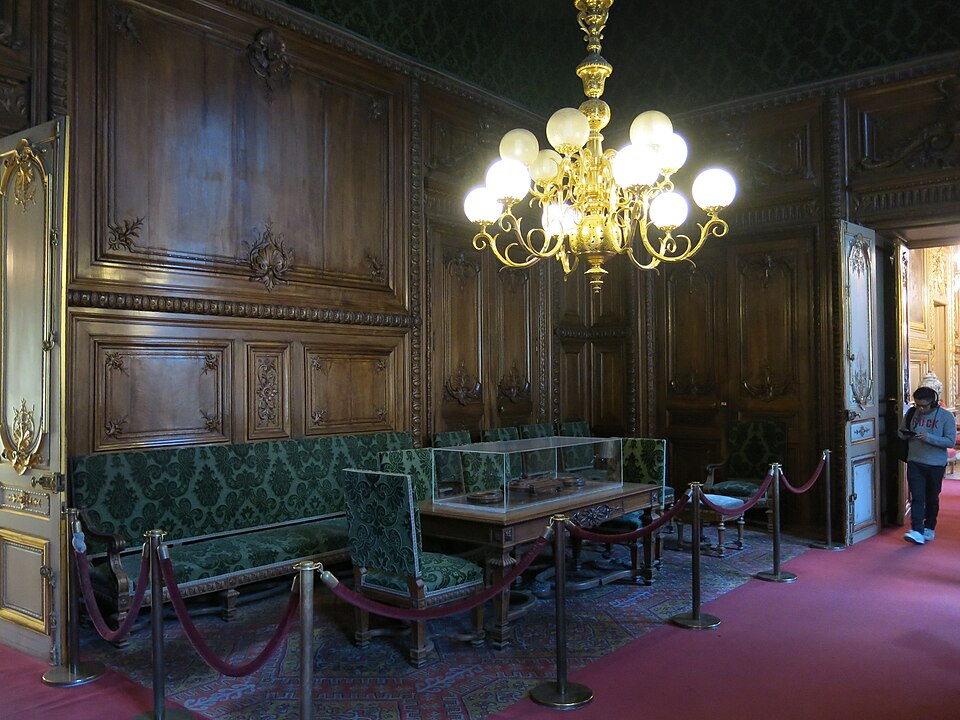
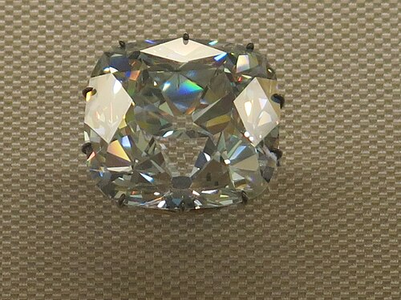

Crown of Louis XV
Made for the coronation of the twelve-year-old Louis XV at Reims. The original diamonds — including the Régent, now displayed nearby — were removed after the ceremony and replaced with paste copies, which are what you see today.
The objects kings and queens actually lived with — furniture, tapestries, crown jewels, and the opulent apartments of Napoleon III.
Made for the coronation of the twelve-year-old Louis XV at Reims. The original diamonds — including the Régent, now displayed nearby — were removed after the ceremony and replaced with paste copies, which are what you see today.

Not a single object but an entire suite of state rooms — crimson silk, gilded stucco, chandeliers heavy enough to frighten the ceiling. These were the ceremonial apartments of the Minister of State under the Second Empire. Walk in and the museum disappears.

Found in India around 1698, smuggled by a slave who hid it in a wound in his leg, sold to Thomas Pitt (grandfather of William Pitt the Elder), and eventually bought by the French crown. Worn by Louis XV, Louis XVI, and set into Napoleon's sword. Still considered the most perfectly cut historical diamond in the world.